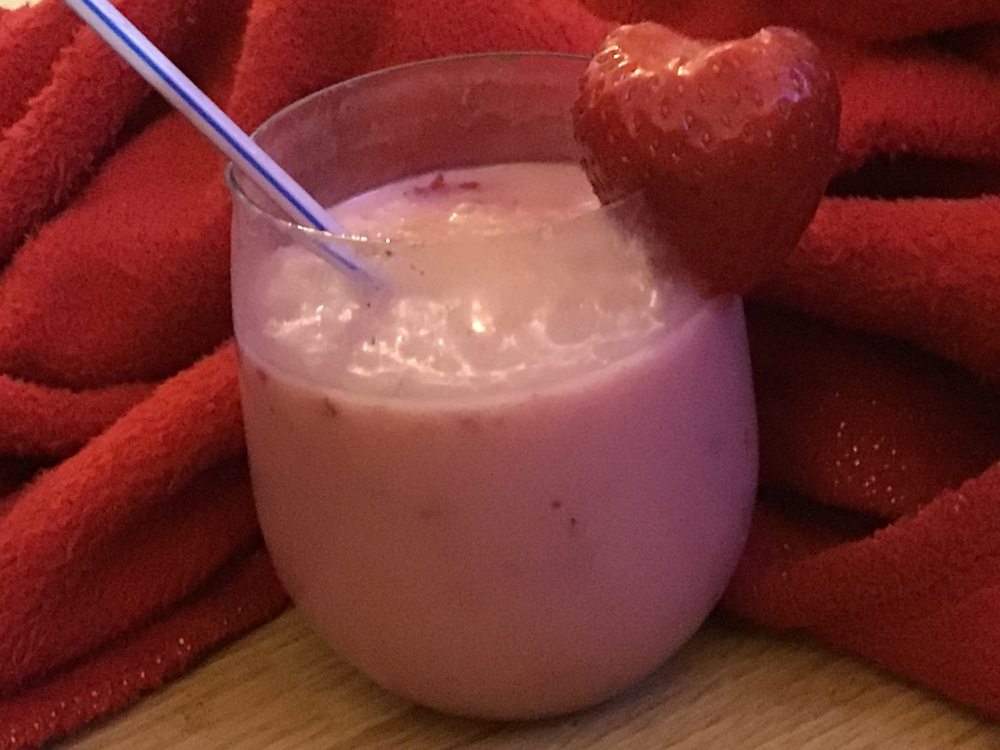

Smoothie

Description
You'll love this strawberry smoothie recipe. It's an icy-cold treat!
Ingredients
- 8 strawberries, hulled
- ½ cup skim milk
- ½ cup plain yogurt
- 3 tablespoons white sugar
- 2 teaspoons vanilla extract
- 6 cubes ice, crushed
Steps
- Combine strawberries, milk, yogurt, sugar, and vanilla in a blender. Add ice and blend until smooth and creamy.
- Pour into glasses and serve immediately.